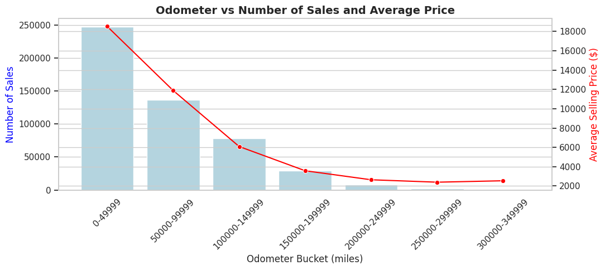

← Back to projects


Automotive Analytics
Vehicle Sales & Pricing Analysis (2015–2020)
Overview
This project analyzes trends and pricing behaviors in the U.S. used car market using SQL for preprocessing and Python for visualization. The dataset (from Kaggle) provides vehicle-level information including make, model, mileage, condition, sale date, and price.
The goal is to understand how mileage, seasonality, state, make/model popularity, and body type impact average prices and sales volume.
Business Questions
- How do average selling prices change month-to-month?
- Which car makes and models sell the most?
- How does mileage affect price and sales volume?
- Which states record the highest sales counts?
- How do average prices vary by body type?
Methodology
- Filtered dataset to 2015–2020 records using SQL.
- Cleaned missing values and standardized body type labels.
- Built summary tables and aggregates in SQL.
- Used Python (pandas, seaborn, matplotlib) for EDA and visuals.
-- Example SQL: Average price by body type
SELECT body_type,
ROUND(AVG(sellingprice), 2) AS avg_price,
COUNT(*) AS vehicles_sold
FROM car_sales_clean
GROUP BY body_type
ORDER BY avg_price DESC;Results & Visuals
📈 Average Selling Price by Month (2015)
🚘 Top 10 Best-Selling Car Models
⏱️ Odometer vs Sales & Price
🗺️ Number of Car Sales by State
🚗 Average Price by Body Type
Key Insights
- Seasonality influences pricing, with distinct early-year and mid-summer peaks.
- Lower mileage cars sell for the highest prices but in lower volumes.
- California, Texas, and Florida lead U.S. sales due to large populations.
- SUVs and trucks consistently command premium prices.